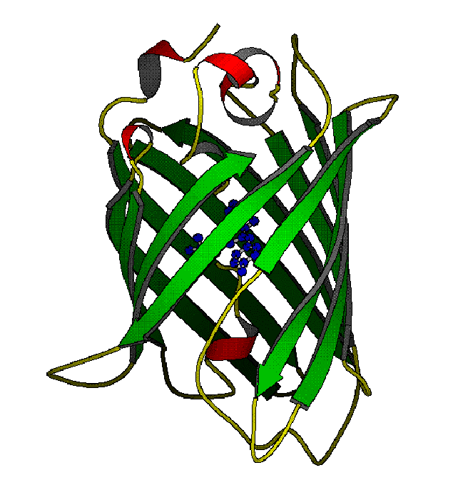

Green Fluorescent Protein

More on the Green Fluorescent Protein simulation using NWChem can be found in
ENVISION, the
NPACI/SDSC Quarterly.
Green Fluorescent Protein molecular modeling and simulation studies:
V.Helms, E.F.Y.Hom, T.P.Straatsma, J.A.McCammon and P.Langhoff,
Exciting Green Fluorescent Protein
ACS Symposium Series,712, 288-295 (1998).
V.Helms, T.P.Straatsma and J.A.McCammon,
Internal Dynamics of Green Fluorescent Protein
J.Chem.Phys.B,103, 3263-3269 (1999).